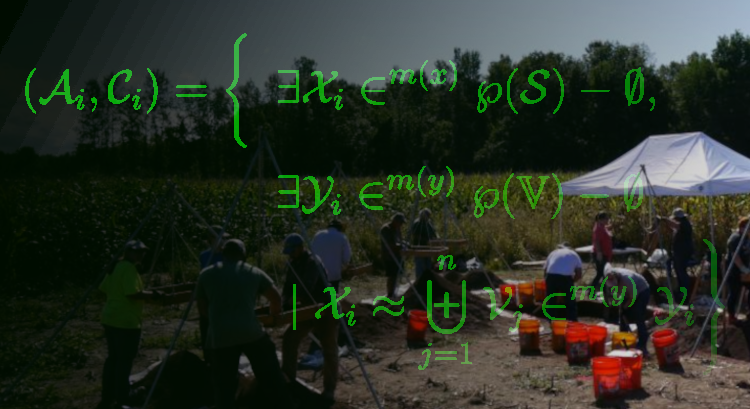

From similarity to network: Building graphs for community detection
Data Science in Archaeology, Part III.a.

It has been a little while since my last installment (Part II). End of year projects, deadlines, and (of course) the holidays have kept me busy. My thanks for your patience, and I’ll try and make it worth the wait.
Last time, we talked about different similarity metrics for sets or combinatorial problems and their particular strengths and idiosyncrasies. We were trying to find the best way to project our bipartite graph of archaeological proveniences and artifacts into individual one-mode graphs. Our goal is to find communities in each of those projected graphs to find meaningful assemblages (communities of artifacts) and contexts (communities of provenience locations).
That does, however, require that we talk about how we determine “best” for this particular scenario. Since our goal is community detection, we want to choose the metric that connects vertices that have the strongest associations while avoiding spurious or non-informative edges. I mentioned last time that we are, in part, looking to see if our projected graphs exhibit characteristics of a scale-free network. We’ll talk about that more later in this post, but it boils down to finding nodes that have a few strong connections rather than a lot of weak ones.
Since this is likely to be a fairly large and involved topic, I’m breaking Part III into two posts. This one will talk about translating our similarity measures into a network, and building the graphs. The next one will tackle the community detection methods, of which there are many.
For those just joining in, this is the Part III of a series in archaeological data science covering:
Part I – Creating and exploring bipartite and one-mode graphs,
Part II – Similarity measures for sets and graph adjacency,
Part III – Graph structure and community detection methods,
a.) Scale-free and small world networks
b.) Community detection methods
Part IV – Geo-spatial networks
I’ll continue using R for the coding, but all of this could be done with Python just as easily.
Introduction
In Part II, we went into some depth about what it means for sets to be similar and some ways to calculate a metric for that similarity. This time around, we’re going to look more closely into how to decide what it means to be similar enough. In other words, we want to find an analytically valid way to decide on a threshold of similarity that best captures the real connections between entities while avoiding spurious associations. That will also help to guide us in selecting which of the similarity metrics to use (i.e., overlap, Jaccard, or Sørensen–Dice) as we go on to start building our bipartite graph projections.
A quick recap…
We started (in Part I) by building a bipartite graph between artifact types and their locations, shown in Figure 1. To keep things simple, we’re using an un-weighted bipartite graph to look at co-locations of artifact types.
We found that projecting this graph into its one-mode counterparts resulted in very densely connected networks. Next, in Part II, we looked at different similarity metrics to find a better method of projection that the simple overlap provided in igraph. We looked at the similarities calculated with the Szymkiewicz-Simpson overlap coefficient, Jaccard similarity coefficient, and Sørensen–Dice coefficient for both provenience (Figure 2) and artifact types (Figure 3).


Now what we want to do is look at how to go about selecting our similarity metric, how to find the appropriate thresholds of similarity, and what effects these have on the resulting graph projections. The goal is to find the right metric and threshold that will allow us to detect the underlying structure of the relationships within and between proveniences and artifact types.
Graph structure and scale-free networks
Our goal is to find out if the inherent structure of our projected graphs, and therefore our bipartite graph as a whole, shows whether or not it is random. If the structure does not appear to be random, then we can reasonably infer that some other process is constraining or directing which artifacts appear where. In archaeological terms, that means that it’s likely that there is some intentional organization to the use of spaces for certain activities. If so, then we can find some partitioning of the artifacts and proveniences that has meaningful interpretations.
Mind you, we’re not actually trying to induce a structure. We are, however, expecting that there has been some manner of degradation in the “signal” of our data (see the introduction to Part I as to why). Our selection of similarity and threshold are meant to dampen the “noise” introduced to the site over time.
One way to determine if we have non-random structure in our graph is to find out if it exhibits scale-free network properties. A scale-free network is one in which the degree of the nodes in the graph approximate a power-law distribution, meaning that most nodes in the graphs have few connections while a few “hub” nodes have many. In a random network, there would be a more even probabilistic distribution of node degree and hub nodes would be far less likely to occur.
The presence of a scale-free network indicates that there is some latent non-random process at play that is driving differential attachments between those nodes. It may be that there is a different process of growth in the network, which archaeologically would be some different spatial or temporal process of artifact deposition. Alternatively, there may be a clustering process or preferential attachment by which certain nodes are more closely associated than others as in the case of hub nodes. A certain suite of artifacts that are all related to the same activities (i.e., an assemblage) would cluster together, for example.